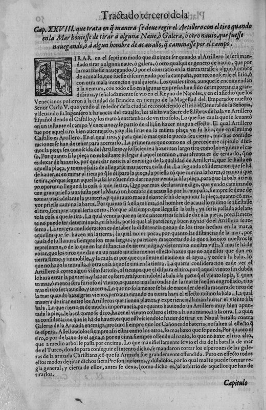

Зачем спилили шпироны?
Когда мы в начале этого года вместе читали Сервантеса и вспоминали «Неистового Роланда», наш друг уважаемый  satchel17 поставил вопрос: почему дон Хуан (в сражении при Лепанто) принял решение удалить «тараны» перед боем, в котором все должен был решать абордаж?
satchel17 поставил вопрос: почему дон Хуан (в сражении при Лепанто) принял решение удалить «тараны» перед боем, в котором все должен был решать абордаж?
Giorgio Vasari, Lepanto, Sala Regia del Vaticano, 1572
Если мы еще раз вспомним группировку сил Священной лиги и Османской империи, то в нас должно зародиться сомнение в том, что ставка делалась лишь на абордаж, на превращение морского боя в обычную схватку между солдатами, типичную для сухопутных сражений того времени. На дворе был 1571 год и галеры того времени уже не являлись просто средством доставки воинов в определенную точку, где они должны были изрубить в шашлык солдат противника, захватить их корабли и знамена и поделить захваченную добычу. Нет, в морское оперативное искусство того времени уже глубоко внедрились положения о использовании огневой мощи своих кораблей для нанесения невосполнимого ущерба противнику на дистанции, до вступления кораблей в непосредственное соприкосновение. В предыдущих заметках о галерах-лантернах мы как раз и писали об усилении с этой целью артиллерийского вооружения на их борту.
Но какое отношение имеют шпироны, или как их иногда неправильно называют, тараны, галер к артиллерии.
Чтобы понять это, обратимся к трактату испанского военного инженера, математика, историка Луиса Колладо из Лебрихи (Luys Collado de Lebrija), королевского инженера армии его католического величества в Ломбардии и Пьемонте, опубликованному им на испанском языке в Милане в 1592 году. Название этого трактата, по обычаям того времени, довольно длинное: Platica Manual de Artilleria, en la qual se tracta de la excelencia de el Arte Militar y origen de ella, y de las Maquinas con que los antiguos començaron a usarla, de la invencion de la Polvora y Artilleria. В сети есть несколько выложенных экземпляров этой замечательной и прекрасно иллюстрированной книги. Для любителей истории артиллерии это незаменимое пособие. Но нас будет интересовать лишь небольшая глава этой книги, глава XXVIII, которая касается морской артиллерии. Для знатоков испанского языка XVI века приведу изображение относящейся к этой главе страницы.

Оборот листа 50 из трактата Л.Колладо (по клику – увеличенное изображение на отдельной вкладке).
В конце текста содержится четкое свидетельство, что командующий флотом Лиги приказал отрезать (cortar) шпироны галер для того, чтобы куршейная пушка могла вести огонь по нисходящей траектории с целью повреждения наиболее уязвимых частей корпуса галер противника ниже ватерлинии.
Следует отметить еще один момент, который мы обсудим позже. Галеры, и особенно галиоты турок сидели в воде существенно ниже христианских галер, да и размеры их были поменьше. Поэтому для их поражения огнем носовых пушек необходимо было обеспечить свободное пространство перед орудиями не только в горизонтальной плоскости, но и с определенным углом наклона к горизонту.
Я просмотрел доступные мне изображения битвы при Лепанто художников того времени. Лишь на одном из них (приведено в начале поста) – фреске Джорджо Вазари в Ватикане – христианские галеры показаны без шпиронов.
Продолжение темы последует в других постах.